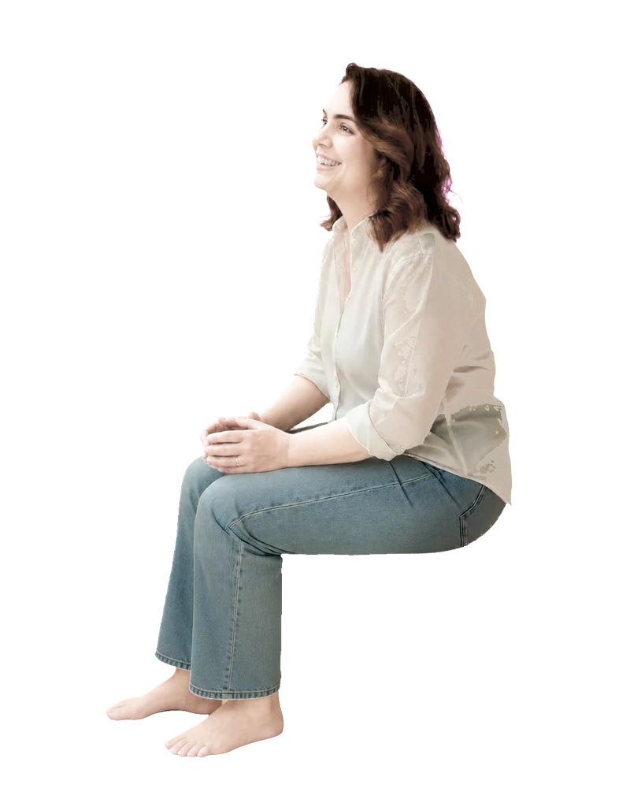
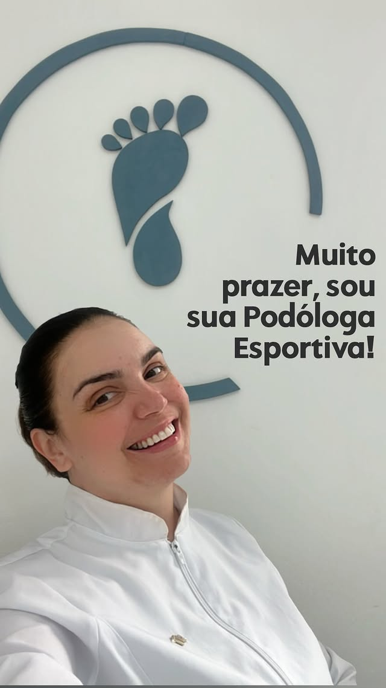

Unha incomodando no treino
Dor lateral, trauma repetitivo ou aquela unha que sempre sofre depois da prova.
Podologia para atletas • Campinas e região
Cuidado podológico individual para quem corre, joga, dança ou pratica esporte — feito por quem entende o seu pace e cuida da sua base.
Fale diretamente com a Jacque pelo Instagram

Quando o pé pede atenção
O desconforto não precisa virar rotina nem ser tratado como “parte do esporte”.
Dor lateral, trauma repetitivo ou aquela unha que sempre sofre depois da prova.
Sinais que aparecem nos mesmos pontos e transformam cada quilômetro em negociação.
Quando o volume aumenta, seus pés precisam de estratégia — não de improviso.
Atendimento sem receita pronta
Quantos quilômetros vêm pela frente? Tem prova marcada? A bolha começou quando? Essas respostas mudam a forma de cuidar.
Conversar sobre o meu casoSua rotina, modalidade, volume de treino, provas e histórico importam.
Cada pé é observado de forma individual, com atenção aos pontos de pressão e desconforto.
A conduta é definida para a sua necessidade, respeitando seu momento esportivo.
Você sai sabendo como cuidar da sua base entre treinos e atendimentos.

Muito prazer, sou a Jacque
Sou podóloga esportiva, corredora amadora e apaixonada por cuidar de quem não quer que os pés sejam o motivo de parar.
Minha experiência no esporte me ajuda a compreender as dúvidas que chegam ao consultório — inclusive a clássica: “será que dá para treinar assim mesmo?”
“Quando sua base está saudável, todo o corpo responde melhor.”
— Jacque FrassonDúvidas frequentes
Não. O atendimento é para quem corre, joga, dança ou pratica qualquer esporte — e também para quem precisa de cuidado especializado para os pés.
Não. A avaliação preventiva pode identificar pontos de pressão, atrito e hábitos que merecem atenção antes que comprometam sua rotina.
Sim. A conduta considera sua modalidade, rotina, histórico, volume de treino e momento esportivo.
Jacque atende em Campinas e região. Fale com ela pelo Instagram para confirmar endereço e disponibilidade.
Sua base também faz parte do treino
Conte o que está acontecendo com seus pés e receba a orientação para dar o próximo passo.
Falar com a Jacque agora